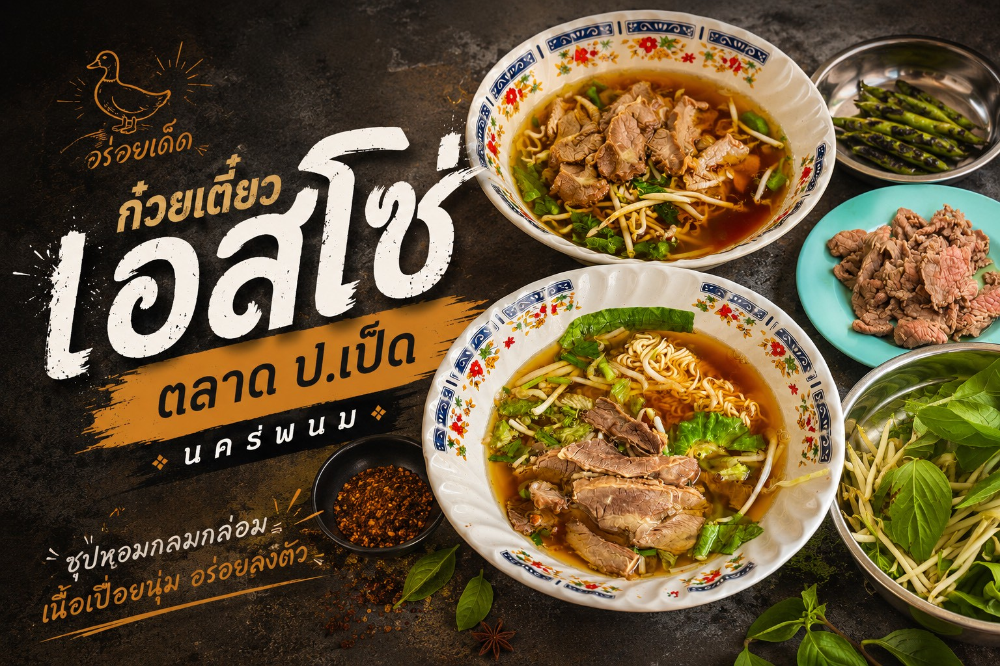
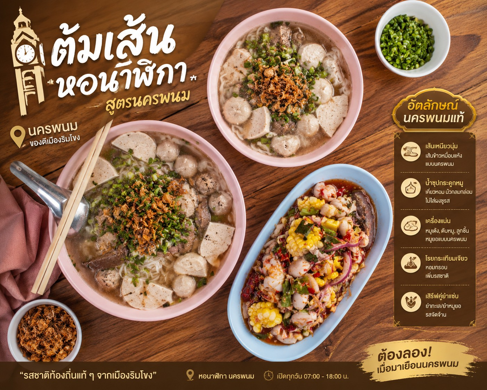

MapNexus
การเดินทางที่มีระดับ
หน้าหลัก
นำเที่ยว
เช็คอิน
พยากรณ์อากาศ
สมัครบัญชี
เข้าสู่ระบบ
กลับหน้าหลัก
🍽️ Local Food
Local Food นครพนม
MUSTTRY
FOODTRUCK
STREETFOOD

MUSTTRY
ก๋วยเตี๋ยวเนื้อเปื่อยน้ำใสหลมหล่อมมากๆ
ก๋วยเตี๋ยวเอสโซ่ตลาด ป.เป็ด
ตลาดป.เป็ด ตำบลในเมือง อำเภอเมืองนครพนม
07:00 – 15:00 น. ทุกวัน
ดูรายละเอียดร้าน
FOODTRUCK
ข้าวเกรียบปากหม้อชุดรวม
ข้าวเกรียบปากหม้อ ซวดลวด
เยื้องหน้าวัดมหาธาตุ รถเข็นสีชมพู
17:00 – 23:00 น. ทุกวัน
ดูรายละเอียดร้าน

STREETFOOD
ต้มเส้น (จั้บญวน)
ต้มเส้นหอนาฬิกา
ถนนศรีเทพ ตำบลในเมือง อำเภอเมืองนครพนม
16:00 – 22:00 น. ทุกวัน
ดูรายละเอียดร้าน
ชื่อร้าน
เมนูแนะนำ
ประวัติและเกี่ยวกับร้าน

 FOODTRUCK
FOODTRUCK